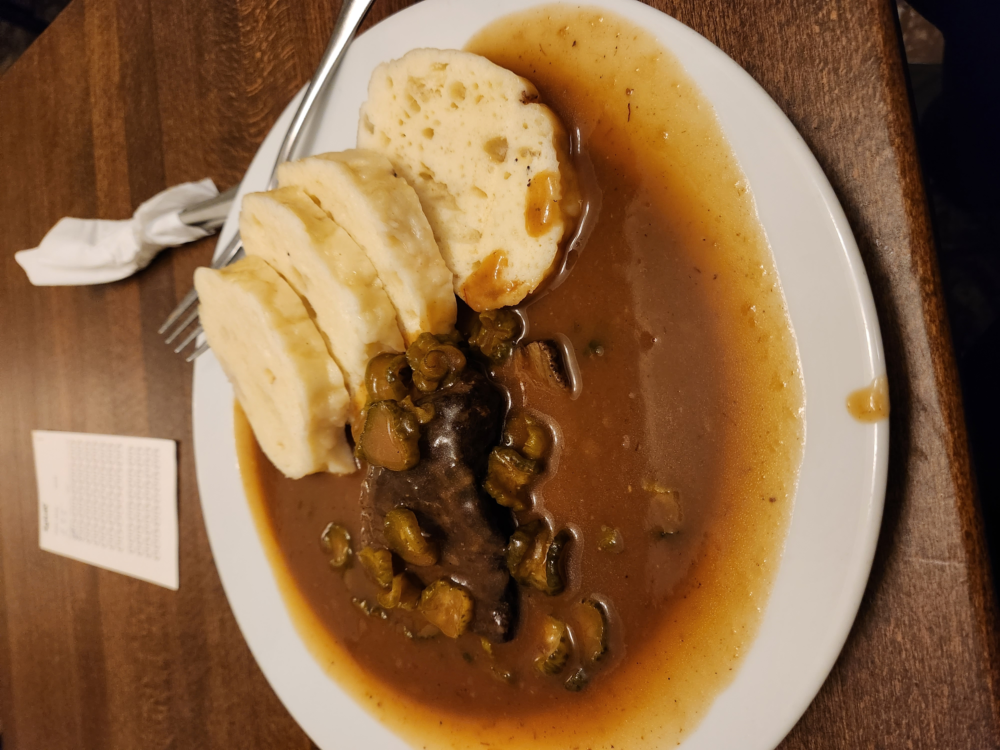

There are many different kinds of tourist attractions, but theme parks are among the more interesting and popular ones (Disneyland and Universal Studios, to name a few). We have included some useful information for first-time guests so that you may make the most of your vacation and have the best experience possible. The structure commonly used for these kinds of attraction guides is known as "Frequently Asked Questions," or "FAQs."

There are many different kinds of tourist attractions, but theme parks are among the more interesting and popular ones (Disneyland and Universal Studios, to name a few). We have included some useful information for first-time guests so that you may make the most of your vacation and have the best experience possible. The structure commonly used for these kinds of attraction guides is known as "Frequently Asked Questions," or "FAQs."
In cities that are known for their food, we select the finest restaurants that won't break the wallet and prepare a list of them.